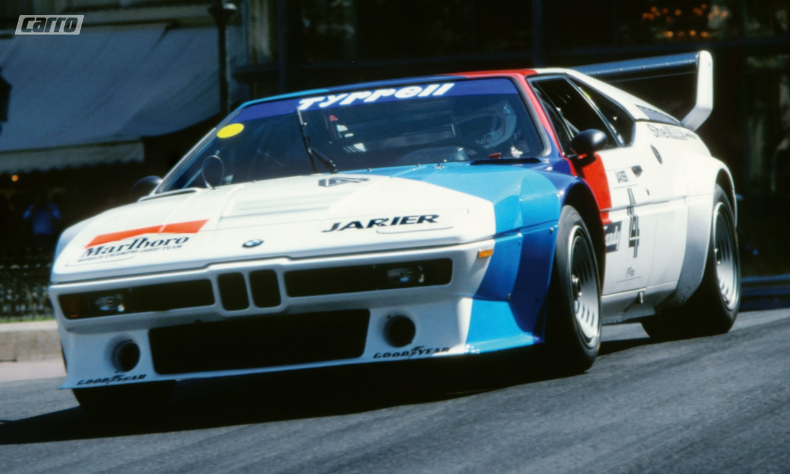

Os modelos BMW M são verdadeiros carros esportivos. Esta combinação de perfeição técnica com o desempenho esportivo aumentará a sua frequência cardíaca. Desde sedã e coupés até os SUVs, a tecnologia de corrida, como a suspensão esportiva M, os motores e mais a típica sintonia da série M, tornam esses veículos esportivos a mistura definitiva entre luxo e desempenho.
 Primeiro veículo desenvolvido pela então BMW Motorsport no final dos anos setenta possuía um formato atemporal e recebeu uma entusiasmada recepção. Desenvolvido pela lenda do design, Giorgio Giugiaro, o formato se baseava no BMW Turbo, um estudo de 1972 do designer de longa data da BMW, Paul Bracq. As grades curvas e estreitas, os faróis dobráveis e as linhas bem definidas combinavam estética e dinâmica. E o desempenho também se tornou lendário: até 1983, foi o veículo de produção mais rápido da Alemanha. O supercarro esportivo com motor mediano atingia uma velocidade máxima de bem mais de 260 km/h, estabelecendo a tradição dos veículos da série M nas pistas. De 1979 até 1981, apenas 460 veículos foram feitos - todos construídos à mão. Qualquer pessoa com sorte o suficiente para dirigir um BMW M1 fala do seu excepcional estilo ao dirigir, da flexibilidade, dinâmica nas curvas e do motor de 3,5 litros com rotação rápida.